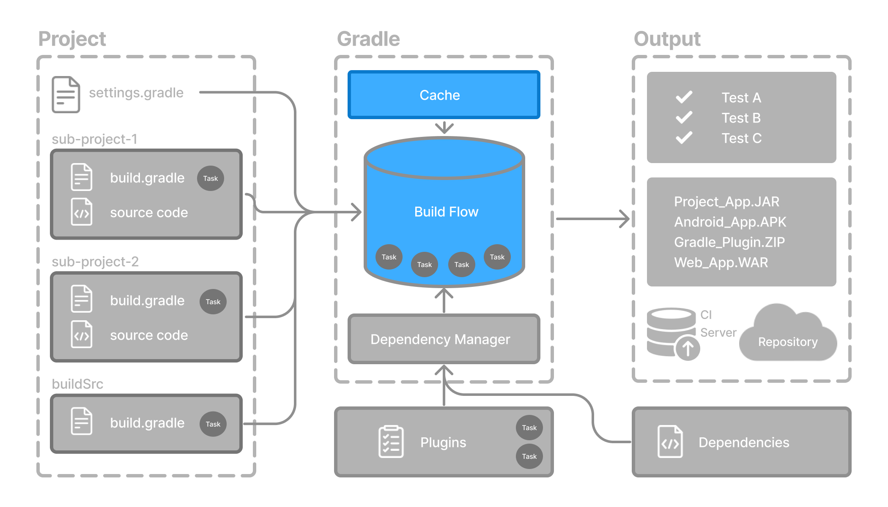
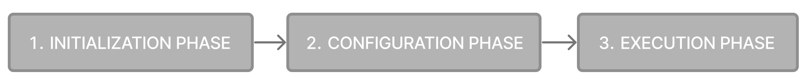
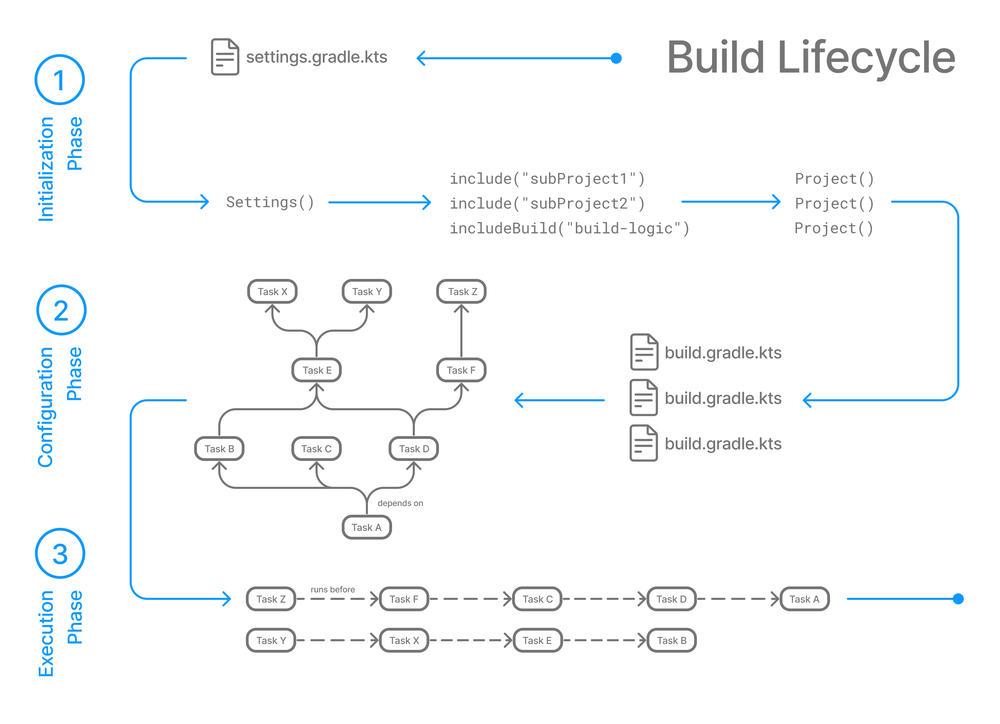
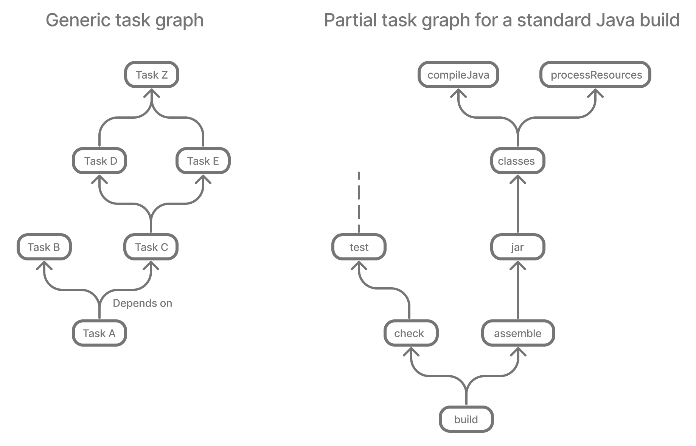

The build lifecycle is the sequence of phases Gradle executes to turn your build scripts, source code, and more, into completed work. From initializing the build environment to configuring projects and finally executing tasks.

Build Phases
A Gradle build has three distinct phases.

Gradle runs these phases in order:
| Phase 1. Initialization | Phase 2. Configuration | Phase 3. Execution |
|---|---|---|
- Detects the settings file | - Evaluates the build files of every project participating in the build | - Schedules and executes the selected tasks |

The following example shows which parts of settings and build files correspond to various build phases:
rootProject.name = "basic"
println("This is executed during the initialization phase.")// Configuration Phase
println("This is executed during the configuration phase.")
tasks.register("configured") {
println("This is also executed during the configuration phase.")
}
// Execution Phase
tasks.register("test") {
doLast {
println("This is executed during the execution phase.")
}
}
// Configurations AND Execution Phase
tasks.register("testBoth") {
println("This is executed during the configuration phase as well.")
doFirst {
println("This is executed first during the execution phase.")
}
doLast {
println("This is executed last during the execution phase.")
}
}rootProject.name = 'basic'
println 'This is executed during the initialization phase.'// Configuration Phase
println 'This is executed during the configuration phase.'
tasks.register('configured') {
println 'This is also executed during the configuration phase.'
}
// Execution Phase
tasks.register('test') {
doLast {
println 'This is executed during the execution phase.'
}
}
// Configurations AND Execution Phase
tasks.register('testBoth') {
println 'This is executed during the configuration phase as well.'
doFirst {
println 'This is executed first during the execution phase.'
}
doLast {
println 'This is executed last during the execution phase.'
}
}The following command executes the test task and testBoth task specified above.
Because Gradle only configures the tasks that are required to run (i.e., the requested task and its dependencies), the configured task will not be configured or executed:
$ ./gradlew test testBothThis is executed during the initialization phase.
> Configure project :
This is executed during the configuration phase.
This is executed during the configuration phase as well.
> Task :test
This is executed during the execution phase.
> Task :testBoth
This is executed first during the execution phase.
This is executed last during the execution phase.
BUILD SUCCESSFUL in 0s
2 actionable tasks: 2 executed$ ./gradlew test testBothThis is executed during the initialization phase.
> Configure project :
This is executed during the configuration phase.
This is executed during the configuration phase as well.
> Task :test
This is executed during the execution phase.
> Task :testBoth
This is executed first during the execution phase.
This is executed last during the execution phase.
BUILD SUCCESSFUL in 0s
2 actionable tasks: 2 executedPhase 1. Initialization
In the initialization phase, Gradle detects the set of projects (root and subprojects) and included builds participating in the build.
Gradle first evaluates the settings file, settings.gradle(.kts), and instantiates a Settings object.
Then, Gradle instantiates Project object instances for each project included in the build (using includeBuild() or include() in the settings file).
Phase 2. Configuration
In the configuration phase, Gradle adds tasks and other properties to the projects found by the initialization phase.
Gradle constructs the task graph by understanding the dependencies between tasks.
Phase 3. Execution
In the execution phase, Gradle runs tasks.
Gradle uses the task execution graphs generated by the configuration phase to determine which tasks to execute. Gradle can execute tasks in parallel.
Task Graphs
As a build author, you write build logic by defining tasks and declaring how they depend on one another. Gradle uses this information to construct a task graph during the configuration phase that models the relationships between these tasks.
For example, if your project includes tasks such as buildHtml, assembleDocs, and createDocs, and you declare that assembleDocs depends on buildHtml, and createDocs depends on assembleDocs, Gradle constructs a graph with this order: buildHtml → assembleDocs → createDocs.
Gradle builds the task graph before executing any task(s).
Across all projects in the build, tasks form a Directed Acyclic Graph (DAG).
This diagram shows two example task graphs, one abstract and the other concrete, with dependencies between tasks represented as arrows:

Your build scripts and plugins are responsible for declaring this task dependency graph, either explicitly via the task dependency mechanism (e.g., dependsOn) or implicitly using task annotation (e.g., by wiring task inputs and outputs).
Next Step: Learn how to write Build Scripts >>
Hooking into the Build Lifecycle
As your build logic becomes more advanced, you might need to execute custom actions during specific build phases. Gradle exposes several APIs that let you listen to or react to key events in the lifecycle.
For a detailed guide on available callbacks and listeners, refer to Lifecycle API.